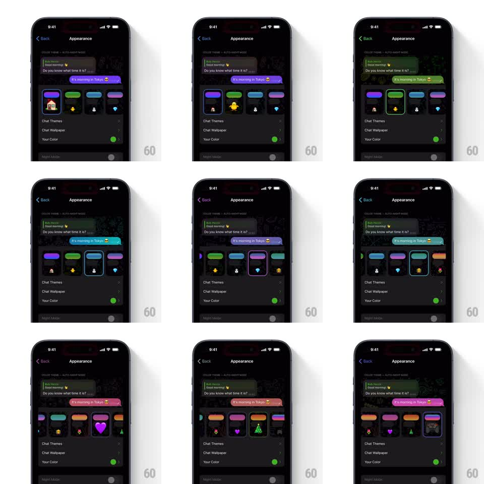

Media
Frame-by-frame

Rebuild this interaction 1:1: Telegram's Appearance picker - tapping a theme swatch re-colors the chat preview bubbles instantly while the swatch's tiny illustration pops and the selection ring slides over.

Rebuild this interaction 1:1: Telegram's Appearance picker - tapping a theme swatch re-colors the chat preview bubbles instantly while the swatch's tiny illustration pops and the selection ring slides over.
## Integration
Integration: stack-agnostic spec - springs given as stiffness/damping, timed motions as duration + curve; map every value to your framework and animation library of choice.
## Scene
Dark Appearance settings screen: a chat preview at top ("Bob", "Hello! 👋", "Good morning! 👋", "Do you know what time it is?", "It's morning in Tokyo 😎" bubbles), then a horizontal row of theme swatches (purple, green, blue, pink, orange...), each a mini wallpaper thumbnail with a small vector illustration (house, duck, snowman, balloon, heart, tree). Below: Chat Themes, Chat Wallpaper, Your Color rows.
## Motion spec
Pattern: theme selection with preview recolor and illustration pop.
- The selection ring slides to the tapped swatch (spring ~380/24, ~200ms) and the swatch lifts (scale 1 -> 1.08, spring ~340/18).
- The preview's outgoing bubble ("It's morning in Tokyo 😎") crossfades to the new accent color (200ms); the wallpaper thumbnail's hue shifts in step.
- The swatch's illustration animates on selection: the duck bobs, the balloon floats up 6pt and back, the heart beats (scale 1 -> 1.25 -> 1, 350ms), the tree sparkles - each a 400ms spring pop (scale 0.7 -> 1.1 -> 1).
- The swatch row scrolls to keep the selection visible (spring ~320/28).
## Calibration
- Recolor is global and simultaneous: bubbles, accents, and thumbnail change in the same 200ms window - no ripple delay.
- The previously selected swatch settles back instantly; only the new one performs.
## Reduced motion
Ring jumps without slide; colors swap without crossfade; illustrations static.
## Don't miss
- The preview conversation text never changes - only its colors.
- Each swatch's illustration is distinct; the pop motion matches its character (heart beats, balloon floats).